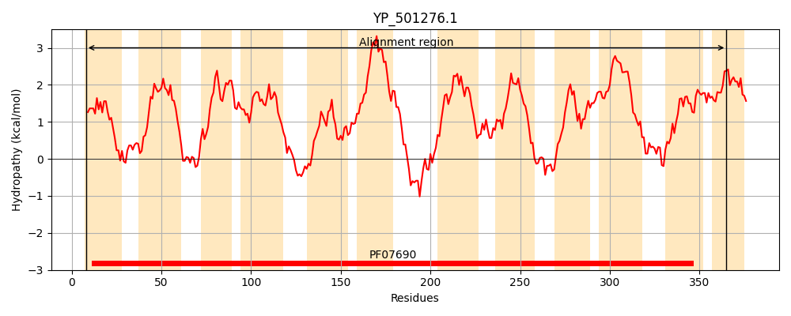
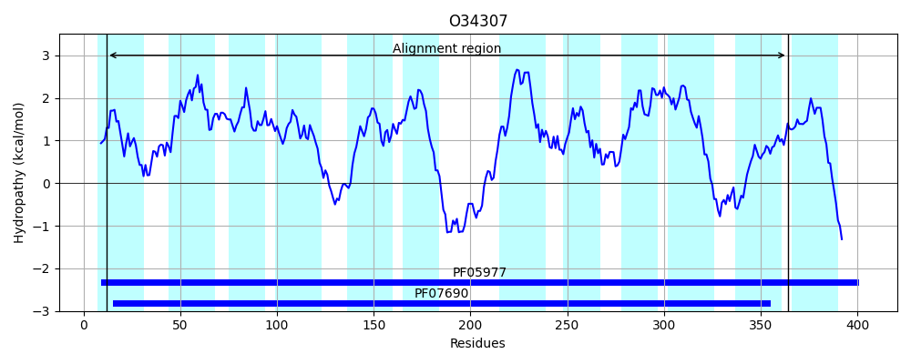
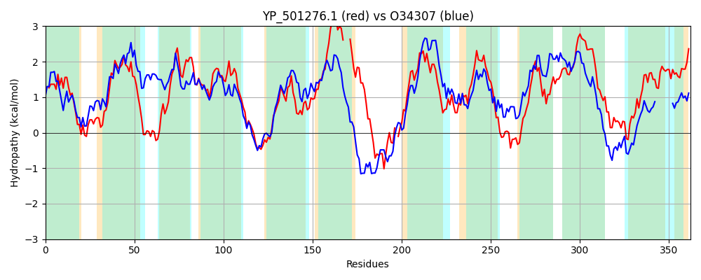

Hit Accession: O34307
Hit TCID: 2.A.1.2.106
Hit Description: gnl|BL_ORD_ID|7124 gnl|TC-DB|O34307|2.A.1.2.106 Uncharacterized MFS-type transporter yvmA OS=Bacillus subtilis (strain 168) GN=yvmA PE=3 SV=1
Mach Len: 362
e:0.000000
Query TMS Count : 12
Hit TMS Count: 12
TMS-Overlap Score: 11.550000
Predicted Substrates:None
BLAST Alignment:
Score: 633 , Bit scores: 248 bits, E-value: 4.8e-79, Alignment length: 362, Percentage identity: 38
Query: 8 LYILGFLAFFASLIQNIYTPIIPRLYDDFQVPLFWINATVGGFIFIVAVMQIVLGRSIDSRDSKKVLLTGLGIVIISSFICAVTHNFILFAISRLFQAIGCGIIPLVTLTLLAKLSTDNGRAQAMANYQIFLSCAPALAPILGSTLGARWDYIGIFSFLLVISIVLFL---IIFFIDIPNVEKGIVKLTEKIEEKYL-TDKVFITLVTLGFLIFFTYFSILVYLPTLLNNTYDIGVGISGVLFLPITVSVILGSLFYKRFSKKYNEIMILRVTITGFAIFTLLFGWLNESNVIILSVIIFILGTCVGIVPALLSTIISKRFEHIKGKVLGVFNFVRYIGMTVGALLIGIISQPLVAFYFTTI 365
LY + F AFFASL QNIY+PI+P + + F V +N +V F+ + A+MQI+LG ID + ++ VL+TG+ +S CAVT +F LF I R+ QA G +PL+ T + +L T N R AM YQ+ LS APA+AP+LG +G Y GIF L ISIVL + I F D P K K + T++ ++TL F++FF YF+++VYLP LL Y I VGI+G+L+LP+ +S I G+ +KR K + + A +LF + +++++++ + + G +G++P L ST+I+ FEH +G +G+FNF+RY GM G P+V+ Y T+
Sbjct: 12 LYTVCFSAFFASLSQNIYSPILPIIKESFHVSTAMVNLSVSVFMIVTAIMQIILGAIIDFKGARIVLITGILATAAASIGCAVTTDFTLFLIFRMIQAAGSAALPLIAATTIGQLFTGNERGSAMGTYQMLLSVAPAIAPVLGGFIGGAAGYEGIFWILAAISIVLLVTNSITFPKDSPTESMQQAKGNVFAHYKSIFTNRTGNVILTLSFVLFFIYFAVIVYLPILLTEHYHIDVGIAGLLYLPLALSTIAGTFLFKRIQAKIGLHTLFIGSNVIAACSIILFAVTHSVSLVLMALTLALFGISMGVIPPLYSTMITNEFEHNRGSAIGMFNFIRYTGMAAG---------PMVSAYLLTM 364 | Protein Hydropathy Plots: |
|---|
|  |  |
Pairwise Alignment-Hydropathy Plot:
|
|---|
|  |